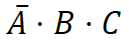
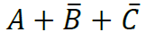
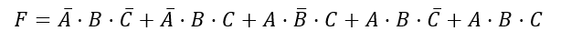
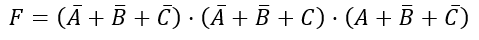

APÉNDICE I: primera y segunda formas canónicas
Consideremos la función lógica
F = A \cdot B + C
cuya tabla de verdad tenemos aquí.
| A | B | C | F | n (ordinal) |
| 0 | 0 | 0 | 0 | 0 |
| 0 | 0 | 1 | 0 | 1 |
| 0 | 1 | 0 | 1 | 2 |
| 0 | 1 | 1 | 1 | 3 |
| 1 | 0 | 0 | 0 | 4 |
| 1 | 0 | 1 | 1 | 5 |
| 1 | 1 | 0 | 1 | 6 |
| 1 | 1 | 1 | 1 | 7 |
Vamos a ver que se puede escribir de dos formas diferentes, a las que vamos a llamar formas canónicas.
Para ello, primero vamos a definir dos conceptos:
- Minterm o minitérmino: producto de n variables (n, en nuestro ejemplo, es 3), con sus valores negados o no. Por ejemplo un minterm es: .
- Maxterm o maxitérmino: suma de n variables, con sus correspondientes valores, negados o no. Por ejemplo: 
Para una función booleana con n variables, hay 2n minitérminos y 2n maxitérminos.
Los minitérminos y maxitérminos acostumbran a etiquetarse según el valor decimal que representan las combinaciones de sus variables (el ordinal que se ha indicado en la tabla).
Así, el término 011 se etiquetaría como {3} (porque es el que tiene el ordinal "3"; observa la última columna de la tabla).
Si es un minitérmino se escribiría m3, y si es un maxitérmino se escribiría M3.
PRIMERA FORMA CANÓNICA:
se obtiene haciendo la suma de todos los minitérminos cuyo valor es 1. En nuestro caso, la expresión en primera forma canónica de nuestra función sería:
que también puede escribirse así de fácil:

F = m(2,3,5,6,7)
leyéndose esto como que "F es igual a la suma de los minitérminos 2, 3, 5, 6 y 7". Fácil, ¿no?
SEGUNDA FORMA CANÓNICA:
se obtiene haciendo el producto de todos los maxitérminos cuyo valor es cero. En nuestro caso, la expresión de la función F como segunda forma canónica sería:

que también puede escribirse de esta otra forma:
F = M(0,1,4)
leyéndose esto como que "F es igual al producto de los maxitérminos 0,1 y 4".
Ambas expresiones representan a la misma función. Simplemente cambia el modo en que se representan, y siempre nos da una idea de la complementariedad que hay en el álgebra de Boole entre una variable o función y su negación (recuerda las dos leyes de De Morgan).
Una muestra de esta complementariedad es, precisamente, que los minitérminos que faltan en la primera forma canónica son los maxitérminos que aparecen en la segunda.
OJO: si te das cuenta, las dos formas canónicas tienen una expresión de mucho mayor tamaño que la función de partida. Precisamente, esa será nuestra preocupación, ya que expresiones tan grandes y que contienen tantas operaciones significan, al fin y al cabo, el uso de un gran número de puertas lógicas.
Habrá que buscar, de algún modo, reducir (simplificar) el tamaño de estas expresiones, y para eso utilizaremos el método de los diagramas de Karnaugh, que podemos ver en el apéndice II.
Obra publicada con Licencia Creative Commons Reconocimiento No comercial Compartir igual 4.0